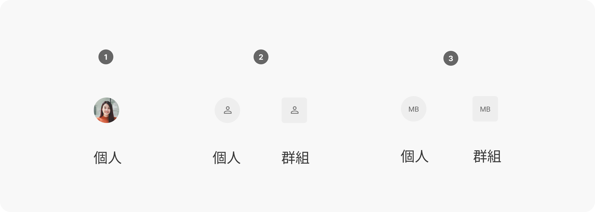
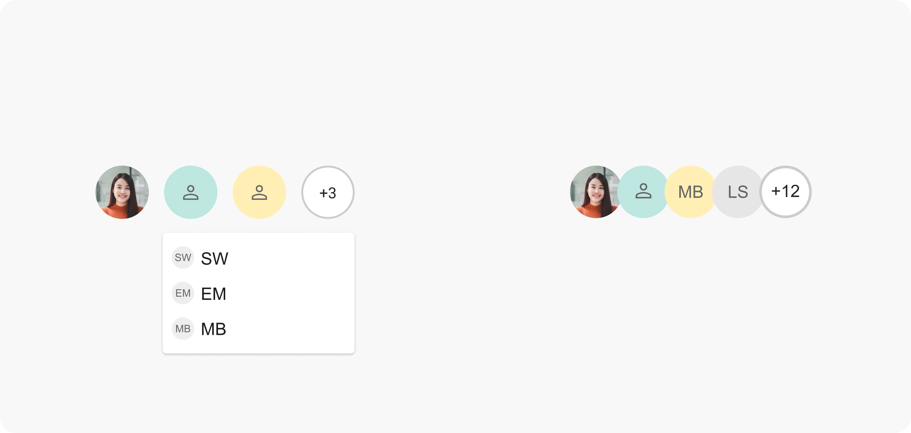

Avatar 頭像
概述
頭像是一種用於表示使用者的視覺元素，提供快速識別和區分不同使用者的功能，通常以圖像、字母或圖示的形式呈現。
使用時機
頭像常用於以下情境：
- 個人資料：在個人資料頁面、設定頁面等顯示使用者頭像。
- 社交互動：在聊天、評論、論壇等場景中顯示使用者頭像，方便快速識別。
- 列表/表格：在列表或表格中使用頭像，來表示顯示資訊的相關人員/使用者。
使用規範
當您取用頭像元件進行設計時，應考慮以下原則：
- 易於辨識的尺寸：頭像尺寸應根據使用場景進行調整，例如在個人資料頁面中使用較大的頭像，在列表中使用較小的頭像。請注意即使在小尺寸裝置下，頭像仍需保持清晰可見。
- 個人化：請盡可能保持使用者自定義頭像的選擇空間，以反映其個性。
- 預設頭像：如果使用者沒有上傳自己的頭像，請提供預設的字母或圖示頭像。
- 文化包容性：若需要自行設計預設頭像時，應避免使用可能冒犯或傷害他人的圖像或符號。
設計範例

- 圖片頭像 (Image Avatar)：使用使用者上傳的圖片作為頭像。
- 圖示頭像 (Icon Avatar)：使用預設的圖示作為頭像，常用於表示系統帳戶或預設使用者。
- 文字頭像 (Letter Avatar)：使用使用者名稱的縮寫字母作為頭像。

個人頭像狀態
個人頭像狀態為專屬於頭像上顯示使用者的狀態資訊，表示使用者的在線狀態、心情、活動或其他個人資訊。這些資訊提示可以幫助快速了解其他使用者的狀態。